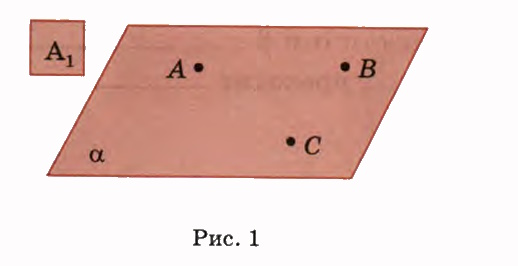
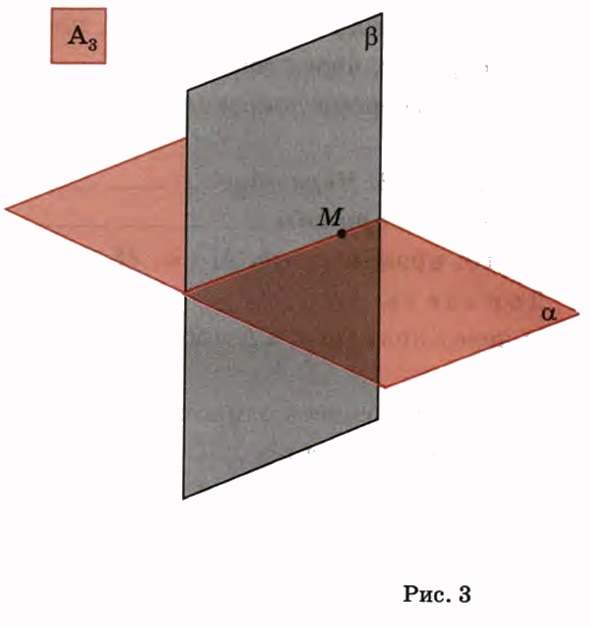
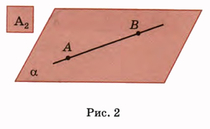

A1. Через любые три точки, ,
проходит плоскость, и притом
A2. Если две точки прямой лежат в плоскости, то ,
лежат в этой плоскости.
A3.Если две плоскости имеют общую точку, то они имеют , на которой лежат этих плоскостей.
|  |  |
|  |
Вопрос. Три точки лежат в каждой из двух различных плоскостей. Можно ли утверждать, что эти точки лежат на одной
прямой?
Ответ. Да. Так как каждая точка принадлежит обеим плоскостям,
то эти плоскости по аксиоме
имеют
Теорема 1. Через прямую и … точку проходит плоскость, и притом
Дано: прямая а, М∉а.
Доказать:
a) через прямую а и точку М проходит плоскость;
б) такая плоскость единственная.
Доказать:
a) через прямую а и точку М проходит плоскость;
б) такая плоскость единственная.
Доказательство.
a) Пусть Peа, Qeа. Точки
не лежат на одной прямой, поэтому через эти точки по проходит некоторая плоскость
a.
Так как P принадлежит a и Q принадлежит a, то прямая a лежит в плоскости . Итак
плоскость
a проходит через точку и
б) Допустим, что через прямую а и точку М проходит еще одна плоскость В. Тогда точки будут лежать и Следовательно, по плоскости а и В Таким образом, через точку и проходит плоскость. Теорема доказана.
Теорема 2.
Через две
плоскость, и притом
Дано: прямые а и b, M ∈ a, M ∈ b.
Доказать:
a) через прямые а и b проходит плоскость;
б) такая плоскость единственная.
Доказательство.
a) Пусть N ∈ b, причем N и M
точки, тогда по через прямую а и точку N проходит
плоскость а.
Так как две точки и прямой b лежат в плоскости а,
то по прямая b.
Итак, через прямые a и b
проходит
б) Допустим, что через прямые а и проходит еще одна B.
Тогда точка
и лежат в этой плоскости, поэтому, согласно , плоскости
а и
B .
Таким образом, через пересекающиеся прямые
и проходит
плоскость. Теорема доказана.